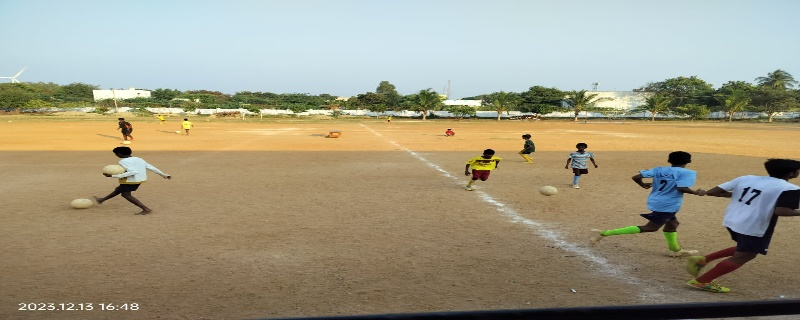
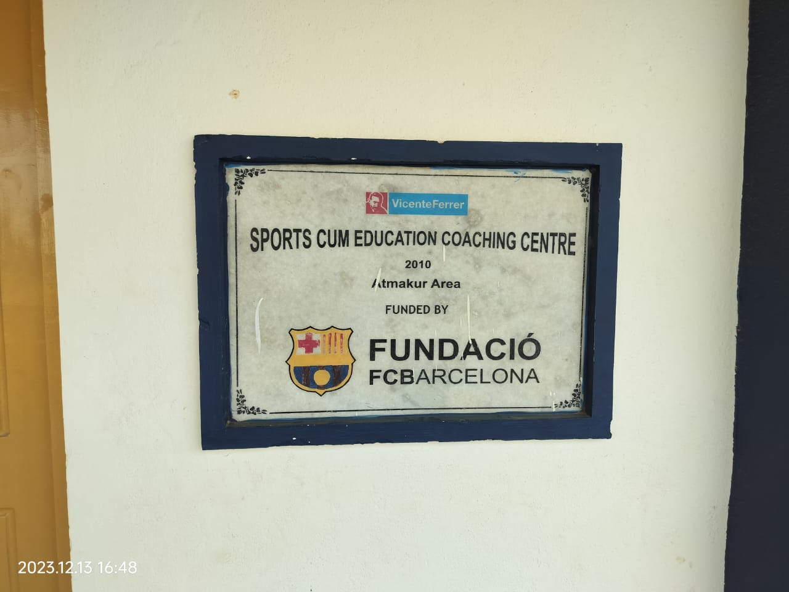

Development Centres
 
In the expansive canvas of sports development, the Rural Development Trust (RDT) has woven a tapestry of Regional Sports Centres, strategically positioned to provide structured support encompassing sports, education, nutrition, and career building. These centres stand as beacons of opportunity, shaping the destinies of young talents and fostering a holistic approach to individual growth. Currently, RDT oversees the operations of five such centres, with a collective cohort of 320 children benefiting from these transformative initiatives.
The genesis of these Regional Sports Centres was rooted in a vision that extended beyond the boundaries of a traditional sports facility. These centres were conceived as dynamic ecosystems where sports became a catalyst for comprehensive development. Embracing a multidimensional approach, RDT's commitment spanned sports proficiency, educational empowerment, nutritional sustenance, and career-oriented guidance. The result was an integrated framework that aimed not only to produce skilled athletes but also well-rounded individuals poised for success in diverse facets of life. One of the key features of these Regional Sports Centres is their inclusive nature, providing opportunities for children from various backgrounds and locations within the district of Ananthapuram. The emphasis on inclusivity reflects RDT's commitment to identifying and nurturing talent at the grassroots level, transcending geographic limitations.
Currently, the network of Regional Sports Centres comprises five strategically located hubs, each serving as an incubation hub for talent. These centres include the Hockey centres in Dharmavaram and Ananthapuram town, both established in 2010. These centres have emerged as crucibles for honing the skills of young hockey enthusiasts, providing a platform for them to showcase their prowess and aspire for greater heights in the sport. In 2011, RDT expanded its footprint with the establishment of multi-sport centres in Bathalapalle and Atmakuru. These centres marked a pivotal move, diversifying the range of sporting disciplines covered. With a broader spectrum that included sports such as Cricket, Football, Hockey, and Special Olympics, these centres became vibrant hubs of sporting activity. The diversity in sports offerings aimed to cater to the varied interests and aptitudes of the young participants, ensuring that each child found a niche where they could thrive.
A distinctive feature within this constellation of Regional Sports Centres is the residential centre dedicated to Special Olympics in Bathalapalle. This bespoke facility is designed to provide tailored support and training for individuals with special needs, aligning with RDT's commitment to inclusivity and creating opportunities for every child, regardless of ability. The collective impact of these Regional Sports Centres is evident in the participation of 320 youth, comprising 75 girls and 245 boys. This dynamic cohort engages in regular and weekly programs, immersing themselves in the rigors and joys of sports training. The disciplines of Cricket, Football, Hockey, and Special Olympics provide a diverse and enriching landscape for these young talents to explore and excel.
Specifically, the Cricket Development Centres operating in Ananthapuram District further enrich the sports portfolio. The Atmakuru program accommodates 78 youth, comprising 15 girls and 63 boys, while the Bathalapalle program caters to 51 youth, all boys. These cricket-centric initiatives serve as breeding grounds for budding cricketers, fostering a love for the sport and imparting the skills necessary for success on the cricketing field.